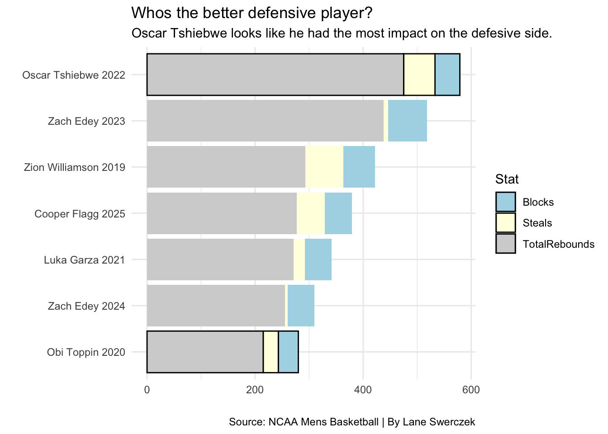

The natianal player of the year goes to the best player in the country. There has been some good players that have won national player of the since 2019. They all had outstanding seaons and it’s hard to tell who was better out of the seven of them. Some of them were better on offense and others were better on defense.
Fans always debate who the best player is or if that player should have even won national player of the year. So we are going to look at three designs and see who is the best or is it to close to tell and have debates like Michael Jordan and Lebron James.
First we look at who has the best TS% and USG% out of the seven national player of year to see who had the ball the most in their hands and who shot the ball well.
As you can see everyones TS% is over 55% which is really good. But, Oscar Tshiebwe’s USG% is low why is that. He average over 15 rebounds a game so he didn’t have plays ran throught him, but I wouldn’t say that takes him out of the conversation as the best. TS% is more important I would say. So looking at the chart it looks like Zach Edey and Zion are the top two.
Now we are going to take a look at a table and see which player has the best Z-score
Code
playerszscore <- players |>filter(MP >0) |>group_by(season_end) |>mutate(pts_z =scale(PTS, center=TRUE, scale=TRUE),usg_z =scale(`USG%`, center=TRUE, scale=TRUE),reb_z =scale(TRB, center=TRUE, scale=TRUE),Composite = pts_z + usg_z + reb_z ) |>filter(MP >750) |>arrange(desc(Composite)) |>ungroup() |>select(Team, Player, season_end, Composite) |>top_n(10, wt=Composite)playerszscore |>select(Player, Team, season_end, Composite) |>gt() |>cols_label( ) |>tab_header(title ="Who has the best zscore?",subtitle ="Luka Garza has the best zscore while Zack Edey is close behind." ) |>tab_style(style =cell_text(color ="black", weight ="bold", align ="left"),locations =cells_title("title") ) |>tab_style(style =cell_text(color ="black", align ="left"),locations =cells_title("subtitle") ) |>tab_source_note(source_note =md("**By:** Lane Swerczek | **Source:** NCAA Mens Basketball") ) |>tab_style(locations =cells_column_labels(columns =everything()),style =list(cell_borders(sides ="bottom", weight =px(3)),cell_text(weight ="bold", size=12) ) ) |>opt_row_striping() |>opt_table_lines("none") |>tab_style(style =list(cell_fill(color ="#CFB991"),cell_text(color ="white") ),locations =cells_body(rows = Player =="Zach Edey") ) |>opt_row_striping() |>opt_table_lines("none") |>tab_style(style =list(cell_fill(color ="#FFCD00"),cell_text(color ="white") ),locations =cells_body(rows = Player =="Luka Garza") ) |>opt_row_striping() |>opt_table_lines("none") |>tab_style(style =list(cell_fill(color ="#0033A0"),cell_text(color ="white") ),locations =cells_body(rows = Player =="Oscar Tshiebwe") )
Who has the best zscore?
Luka Garza has the best zscore while Zack Edey is close behind.
Player
Team
season_end
Composite
Luka Garza
Iowa Hawkeyes
2021
11.291563
Vonterius Woolbright
Western Carolina Catamounts Men's
2024
11.031007
Zach Edey
Purdue Boilermakers Men's
2023
11.024462
Lamine Diane
Cal State Northridge Matadors
2019
10.634288
Mike Daum
South Dakota State Jackrabbits
2019
10.281354
Fardaws Aimaq
Utah Valley Wolverines
2022
10.141983
Terry Taylor
Austin Peay Governors
2021
9.904534
Oscar Tshiebwe
Kentucky Wildcats
2022
9.813471
Nathan Knight
William & Mary Tribe
2020
9.763951
Kofi Cockburn
Illinois Fighting Illini
2021
9.526826
By: Lane Swerczek | Source: NCAA Mens Basketball
As you can see out of the seven players only three of them are on here Luka Garza, Zach Edey, and Oscar Tshiebwe. Luka Garza is first with 11.03 and Zach Edey not for behind. So after this i would say that Zach Edey is the best.
The Last chart is a stacked bar chart where he see who had the biggest impact on defense. That includes Total rebounds, steals, and blocks.
Code
poypergame <- poy |>mutate(PPG = PTS / G,AST = AST / G,Rebounds = TRB / G ) |>select(Season, Team, Player, PPG , AST, Rebounds)stackedpoy <- poy |>group_by(PlayerSeason) |>summarise(TotalRebounds =sum(TRB),Steals =sum(STL),Blocks =sum(BLK) ) |>mutate(Hustle = TotalRebounds+Steals+Blocks) |>select( PlayerSeason, Hustle, TotalRebounds, Steals, Blocks ) |>pivot_longer(cols =c(-PlayerSeason, -Hustle), names_to ="Stat", values_to ="Number") tshiebew <- stackedpoy |>filter(PlayerSeason =="Oscar Tshiebwe 2022")obi <- stackedpoy |>filter(PlayerSeason =="Obi Toppin 2020")ggplot() +geom_bar(data=stackedpoy, aes(x=reorder(PlayerSeason, Hustle), weight=Number, fill=Stat)) +geom_bar(data=tshiebew, aes(x=PlayerSeason, weight=Number, fill=Stat), color="black") +geom_bar(data=obi, aes(x=PlayerSeason, weight=Number, fill=Stat), color="black") +labs(x="",y="",title="Whos the better defensive player?", subtitle="Oscar Tshiebwe looks like he had the most impact on the defesive side. ", caption="Source: NCAA Mens Basketball | By Lane Swerczek") +scale_fill_manual(values=c("blue", "red", "yellow"), labels=c("Blocks","Steals","TotalRebounds")) +coord_flip() +theme_minimal()

With looking at who had the most impact on defense it looks to be Oscar Tshiebwe because he had a ton of rebounds. Zion Williamson has the most blocks. And Zach Edey has the most blocks. So who is the best on the defensive side. Obi Toppin’s player of the year season was covid season so would he be higher than he is.
So after looking at all three charts I would have give it to 2023 Zach Edey. He is the only player that was high on every chart.